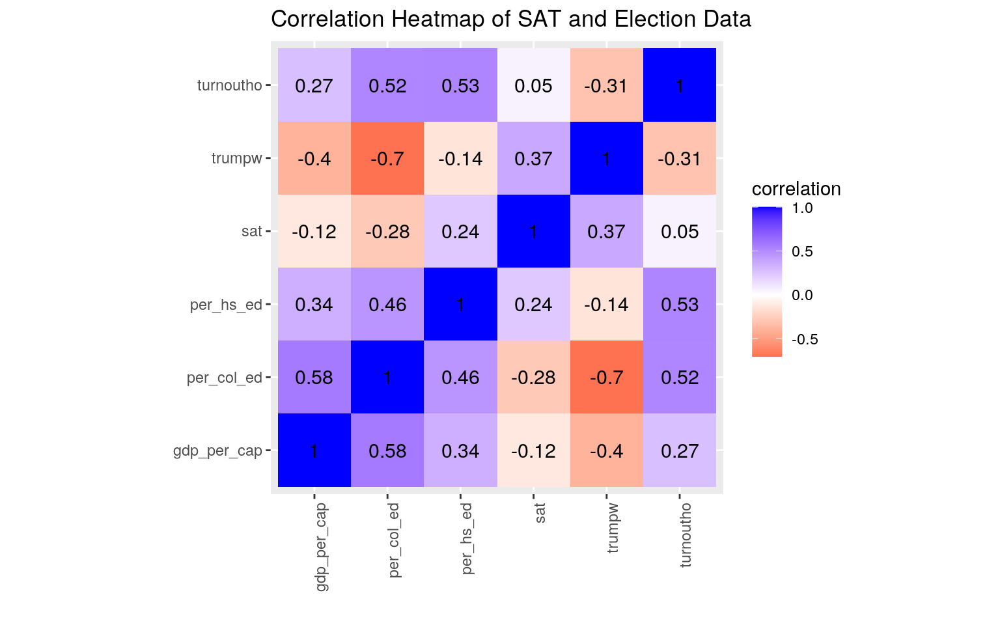
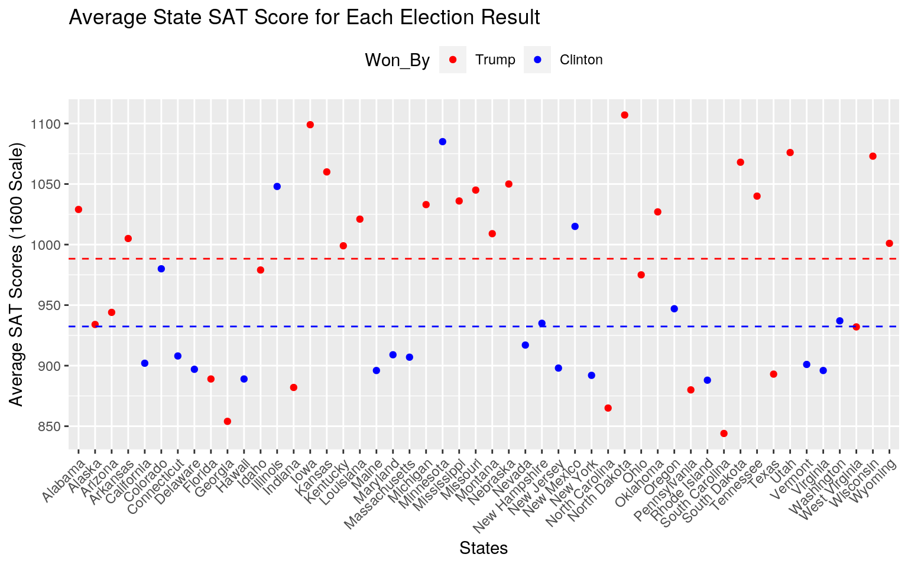
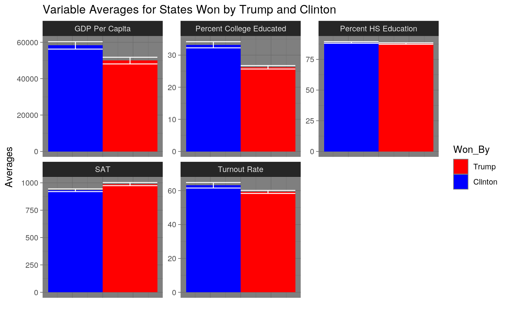
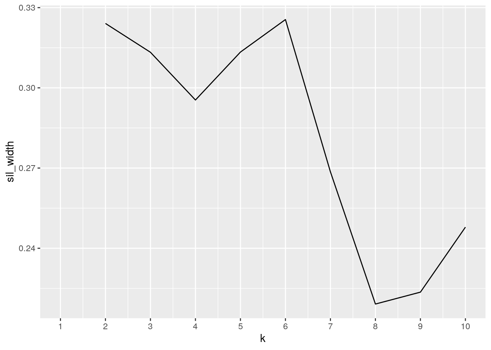
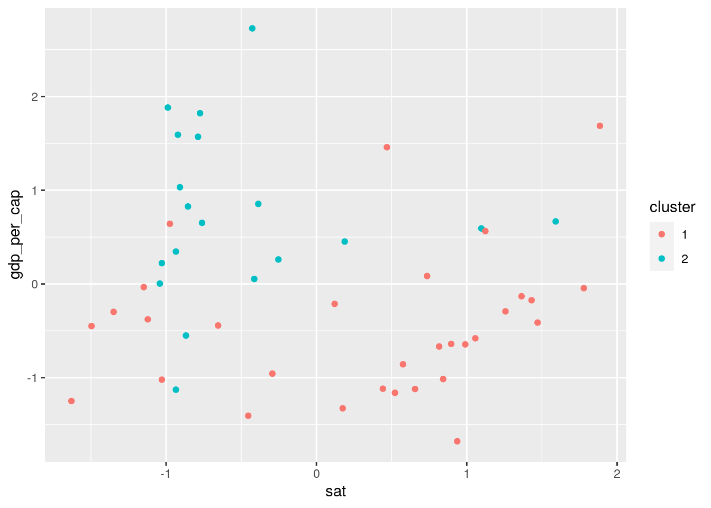
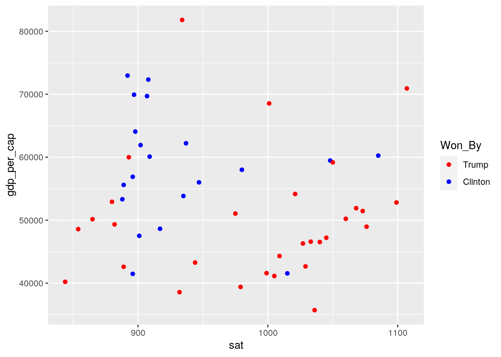
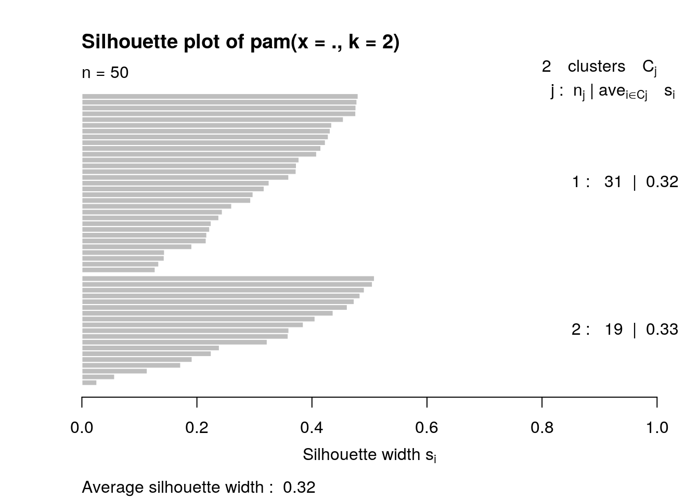
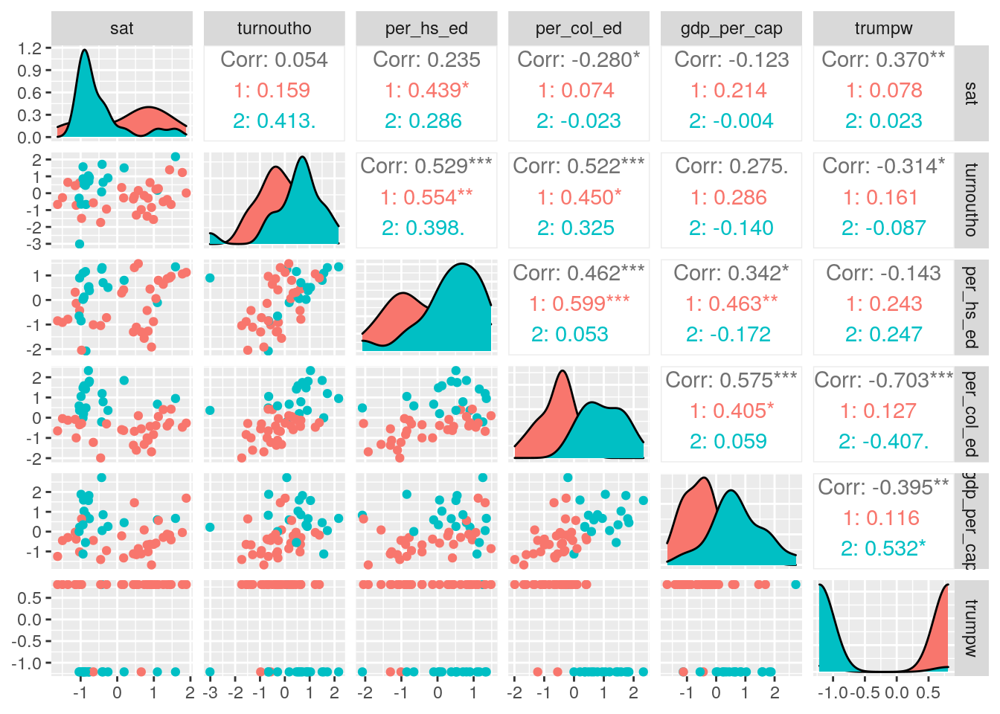

##Anthony Bruccoliere (adb3778)
#Introduction: In this project, I merge two datasets and analyze their relationships. The two datasets that will be used are 2009 SAT and 2016 Election. I chose to compare these datasets because I believe they can provide an interesting insight into the some of the demographics behind elections, particularly those relating to voter’s education across states. I think this topic is really interesting because after briefly looking at the data, I can see a wide variability across states that could provide some insights into the hotly contested 2016 election.
#Joining/Merging:
library(tidyverse)
library(ggplot2)
library(dplyr)
SAT <- read.csv("SAT.csv")
glimpse(SAT)## Rows: 50
## Columns: 9
## $ X <int> 1, 2, 3, 4, 5, 6, 7, 8, 9, 10, 11, 12, 13, 14, 15, 16, 17, 18,…
## $ state <fct> Alabama, Alaska, Arizona, Arkansas, California, Colorado, Conn…
## $ expend <dbl> 4.405, 8.963, 4.778, 4.459, 4.992, 5.443, 8.817, 7.030, 5.718,…
## $ ratio <dbl> 17.2, 17.6, 19.3, 17.1, 24.0, 18.4, 14.4, 16.6, 19.1, 16.3, 17…
## $ salary <dbl> 31.144, 47.951, 32.175, 28.934, 41.078, 34.571, 50.045, 39.076…
## $ frac <int> 8, 47, 27, 6, 45, 29, 81, 68, 48, 65, 57, 15, 13, 58, 5, 9, 11…
## $ verbal <int> 491, 445, 448, 482, 417, 462, 431, 429, 420, 406, 407, 468, 48…
## $ math <int> 538, 489, 496, 523, 485, 518, 477, 468, 469, 448, 482, 511, 56…
## $ sat <int> 1029, 934, 944, 1005, 902, 980, 908, 897, 889, 854, 889, 979, …election <- read.csv("election_turnout.csv")
glimpse(election)## Rows: 51
## Columns: 11
## $ X <int> 1, 2, 3, 4, 5, 6, 7, 8, 9, 10, 11, 12, 13, 14, 15, 16, 17, …
## $ year <int> 2016, 2016, 2016, 2016, 2016, 2016, 2016, 2016, 2016, 2016,…
## $ state <fct> Alabama, Alaska, Arizona, Arkansas, California, Colorado, C…
## $ region <fct> South, West, West, South, West, West, Northeast, South, Sou…
## $ division <fct> East South Central, Pacific, Mountain, West South Central, …
## $ turnoutho <dbl> 59.0, 61.3, 55.0, 52.8, 56.7, 70.1, 65.2, 64.4, 60.9, 64.6,…
## $ perhsed <dbl> 84.3, 92.1, 86.0, 84.8, 81.8, 90.7, 89.9, 88.4, 89.3, 86.9,…
## $ percoled <dbl> 23.5, 28.0, 27.5, 21.1, 31.4, 38.1, 37.6, 30.0, 54.6, 27.3,…
## $ gdppercap <int> 42663, 81801, 43269, 41129, 61924, 58009, 72331, 69930, 181…
## $ ss <int> 0, 0, 0, 0, 0, 1, 0, 0, 0, 1, 0, 0, 0, 0, 0, 1, 0, 0, 0, 0,…
## $ trumpw <int> 1, 1, 1, 1, 0, 0, 0, 0, 0, 1, 1, 0, 1, 0, 1, 1, 1, 1, 1, 0,…satvote <- SAT %>% full_join(election, by = c(state = "state")) %>%
select(state, sat, turnoutho, perhsed, percoled, gdppercap,
trumpw) %>% rename(per_hs_ed = "perhsed", per_col_ed = "percoled",
gdp_per_cap = "gdppercap") %>% na.omit() %>% mutate(Won_By = recode(trumpw,
`0` = "Clinton", `1` = "Trump"))
glimpse(satvote)## Rows: 50
## Columns: 8
## $ state <fct> Alabama, Alaska, Arizona, Arkansas, California, Colorado,…
## $ sat <int> 1029, 934, 944, 1005, 902, 980, 908, 897, 889, 854, 889, …
## $ turnoutho <dbl> 59.0, 61.3, 55.0, 52.8, 56.7, 70.1, 65.2, 64.4, 64.6, 59.…
## $ per_hs_ed <dbl> 84.3, 92.1, 86.0, 84.8, 81.8, 90.7, 89.9, 88.4, 86.9, 85.…
## $ per_col_ed <dbl> 23.5, 28.0, 27.5, 21.1, 31.4, 38.1, 37.6, 30.0, 27.3, 28.…
## $ gdp_per_cap <int> 42663, 81801, 43269, 41129, 61924, 58009, 72331, 69930, 4…
## $ trumpw <int> 1, 1, 1, 1, 0, 0, 0, 0, 1, 1, 0, 1, 0, 1, 1, 1, 1, 1, 0, …
## $ Won_By <chr> "Trump", "Trump", "Trump", "Trump", "Clinton", "Clinton",…I full joined the SAT and election datasets into a new dataset called satvote using “state” as the ID variable. Both datasets had data recorded by state so joining was fairly simple. The datasets initially contained about 20 variables but I slimmed it down to 8. I dropped several variables, like expend, ratio, region, and etc, because I either was unsure about what the variable recorded or the variable was not applicable/interesting to the analysis. I also removed all NAs which resulted in the removal of election data for the District of Colombia because that was not recorded in the SAT dataset. I renamed a few variables to help make it more clear what they were recording. Finally, I created a new variable ‘Won_By’ to label the binary data of the trumpw variable.
#Wrangling and Tidying:
c(satvote %>% filter(trumpw == "0") %>% summarise_at(c("sat",
"gdp_per_cap"), mean), satvote %>% filter(trumpw == "1") %>%
summarise_at(c("sat", "gdp_per_cap"), mean))## $sat
## [1] 932.35
##
## $gdp_per_cap
## [1] 58290.6
##
## $sat
## [1] 988.3
##
## $gdp_per_cap
## [1] 49934.8MetricSumm <- satvote %>% summarize_at(2:7, .funs = list(mean = mean,
sd = sd, var = var, max = max, min = min, n.distinct = n_distinct,
length = length, IQR = IQR, median = median))
glimpse(MetricSumm)## Rows: 1
## Columns: 54
## $ sat_mean <dbl> 965.92
## $ turnoutho_mean <dbl> 60.82
## $ per_hs_ed_mean <dbl> 88.224
## $ per_col_ed_mean <dbl> 29.012
## $ gdp_per_cap_mean <dbl> 53277.12
## $ trumpw_mean <dbl> 0.6
## $ sat_sd <dbl> 74.82056
## $ turnoutho_sd <dbl> 6.179294
## $ per_hs_ed_sd <dbl> 3.089585
## $ per_col_ed_sd <dbl> 4.93404
## $ gdp_per_cap_sd <dbl> 10461.4
## $ trumpw_sd <dbl> 0.4948717
## $ sat_var <dbl> 5598.116
## $ turnoutho_var <dbl> 38.18367
## $ per_hs_ed_var <dbl> 9.545535
## $ per_col_ed_var <dbl> 24.34475
## $ gdp_per_cap_var <dbl> 109440812
## $ trumpw_var <dbl> 0.244898
## $ sat_max <int> 1107
## $ turnoutho_max <dbl> 74.2
## $ per_hs_ed_max <dbl> 92.8
## $ per_col_ed_max <dbl> 40.5
## $ gdp_per_cap_max <int> 81801
## $ trumpw_max <int> 1
## $ sat_min <int> 844
## $ turnoutho_min <dbl> 42.2
## $ per_hs_ed_min <dbl> 81.8
## $ per_col_ed_min <dbl> 19.2
## $ gdp_per_cap_min <int> 35717
## $ trumpw_min <int> 0
## $ sat_n.distinct <int> 48
## $ turnoutho_n.distinct <int> 46
## $ per_hs_ed_n.distinct <int> 42
## $ per_col_ed_n.distinct <int> 48
## $ gdp_per_cap_n.distinct <int> 50
## $ trumpw_n.distinct <int> 2
## $ sat_length <int> 50
## $ turnoutho_length <int> 50
## $ per_hs_ed_length <int> 50
## $ per_col_ed_length <int> 50
## $ gdp_per_cap_length <int> 50
## $ trumpw_length <int> 50
## $ sat_IQR <dbl> 134.75
## $ turnoutho_IQR <dbl> 8.05
## $ per_hs_ed_IQR <dbl> 5.25
## $ per_col_ed_IQR <dbl> 5.825
## $ gdp_per_cap_IQR <dbl> 13507.25
## $ trumpw_IQR <dbl> 1
## $ sat_median <dbl> 945.5
## $ turnoutho_median <dbl> 61.1
## $ per_hs_ed_median <dbl> 88.85
## $ per_col_ed_median <dbl> 28.2
## $ gdp_per_cap_median <dbl> 51679
## $ trumpw_median <dbl> 1CollegeTurnout <- satvote %>% group_by(trumpw) %>% mutate(average_turnout = mean(turnoutho)) %>%
filter(per_col_ed > 30) %>% arrange(-trumpw)
CollegeTurnout %>% select(state, trumpw, per_col_ed, average_turnout) %>%
glimpse()## Rows: 18
## Columns: 4
## Groups: trumpw [2]
## $ state <fct> Kansas, Utah, California, Colorado, Connecticut, Hawa…
## $ trumpw <int> 1, 1, 0, 0, 0, 0, 0, 0, 0, 0, 0, 0, 0, 0, 0, 0, 0, 0
## $ per_col_ed <dbl> 31.0, 31.1, 31.4, 38.1, 37.6, 30.8, 32.3, 37.9, 40.5,…
## $ average_turnout <dbl> 59.25333, 59.25333, 63.17000, 63.17000, 63.17000, 63.…sat.stat <- satvote %>% group_by(trumpw) %>% summarise(MEAN_SAT = mean(sat),
SD_SAT = sd(sat), n = n_distinct(state), SE_SAT = sd(sat)/sqrt(n))
gdp.stat <- satvote %>% group_by(trumpw) %>% summarise(MEAN_GDP = mean(gdp_per_cap),
SD_GDP = sd(gdp_per_cap), n = n_distinct(state), SE_GDP = sd(gdp_per_cap)/sqrt(n))
hs.stat <- satvote %>% group_by(trumpw) %>% summarise(MEAN_HS = mean(per_hs_ed),
SD_HS = sd(per_hs_ed), n = n_distinct(state), SE_HS = sd(per_hs_ed)/sqrt(n))
col.stat <- satvote %>% group_by(trumpw) %>% summarise(MEAN_COL = mean(per_col_ed),
SD_COL = sd(per_col_ed), n = n_distinct(state), SE_COL = sd(per_col_ed)/sqrt(n))
turnout.stat <- satvote %>% group_by(trumpw) %>% summarise(MEAN_turnout = mean(turnoutho),
SD_turnout = sd(turnoutho), n = n_distinct(state), SE_turnout = sd(turnoutho)/sqrt(n))
stats <- sat.stat %>% full_join(gdp.stat, by = c(trumpw = "trumpw",
n = "n")) %>% full_join(hs.stat, by = c(trumpw = "trumpw",
n = "n")) %>% full_join(col.stat, by = c(trumpw = "trumpw",
n = "n")) %>% full_join(col.stat, by = c(trumpw = "trumpw",
n = "n")) %>% mutate(Won_By = recode(trumpw, `0` = "Clinton",
`1` = "Trump")) %>% select(-trumpw) %>% relocate(Won_By,
n)
longstats <- stats %>% pivot_longer(3:17, names_to = "name",
values_to = "value") %>% separate(name, into = c("STAT",
"Metric"))
glimpse(longstats)## Rows: 30
## Columns: 5
## $ Won_By <chr> "Clinton", "Clinton", "Clinton", "Clinton", "Clinton", "Clinto…
## $ n <int> 20, 20, 20, 20, 20, 20, 20, 20, 20, 20, 20, 20, 20, 20, 20, 30…
## $ STAT <chr> "MEAN", "SD", "SE", "MEAN", "SD", "SE", "MEAN", "SD", "SE", "M…
## $ Metric <chr> "SAT", "SAT", "SAT", "GDP", "GDP", "GDP", "HS", "HS", "HS", "C…
## $ value <dbl> 9.323500e+02, 5.642347e+01, 1.261667e+01, 5.829060e+04, 9.1187…Two metrics I thought would be especially interesting to look at when grouped by election results were state SAT averages and GDP. I explored this relationship by finding the average SAT and GDP for states won by Trump and Clinton. The average SAT and GDP for Trump states were 932.35 and 58290.6. The average SAT and GDP for Clinton states were 988.3 and 49934.8. Trump states had a higher average GDP while Clinton states had a higher average SAT. I also ran mass summary statistics on all the metric variables to get a better picture of the data. Additionally, I wanted to get a better picture of turnout of highly educated states, so I added a column recording the average turnout of states with over 30% college educated population. Out of 18 of these states, only 2 were Trump states and Clinton states were ~4% higher for average turnout.
Finally, I wanted to create a table recording the mean, standard deviation, and standard error of each of the metrics. I found these values for each of the metrics and joined the all the resulting datasets using Won_By and n as ID variables. I then rearranged the summary dataset to make it tidy. I pivoted the data longer and separated the name of the statistical summary from the metric it evaluated and put those in their own columns. The final result was a tidy statistical summary of the metrics called longstats.
#Visualizing:
satvote %>% select_if(is.numeric) %>% cor(use = "pair") %>% as.data.frame %>%
rownames_to_column("var1") %>% pivot_longer(-1, names_to = "var2",
values_to = "correlation") %>% ggplot(aes(var1, var2, fill = correlation)) +
geom_tile() + scale_fill_gradient2(low = "red", mid = "white",
high = "blue") + geom_text(aes(label = round(correlation,
2)), color = "black", size = 4) + theme(axis.text.x = element_text(angle = 90,
hjust = 1)) + coord_fixed() + xlab("") + ylab("") + ggtitle("Correlation Heatmap of SAT and Election Data")
ggplot(satvote, aes(state, sat, color = Won_By)) + geom_point(aes(group = trumpw)) +
theme(axis.text.x = element_text(angle = 45, hjust = 1),
legend.position = "top") + ggtitle("Average State SAT Score for Each Election Result") +
scale_color_manual(breaks = c("Trump", "Clinton"), values = c("red",
"blue")) + geom_hline(yintercept = 932.35, linetype = "dashed",
color = "blue") + geom_hline(yintercept = 988.3, linetype = "dashed",
color = "red") + ylim(800, 1150) + scale_y_continuous("Average SAT Scores (1600 Scale)",
breaks = seq(800, 1150, 50)) + scale_x_discrete("States")
satvote %>% rename(SAT = "sat", `GDP Per Capita` = "gdp_per_cap",
`Turnout Rate` = "turnoutho", `Percent HS Education` = "per_hs_ed",
`Percent College Educated` = "per_col_ed") %>% pivot_longer(2:6,
names_to = "var1", values_to = "value") %>% ggplot(aes(1,
value, fill = Won_By)) + geom_bar(stat = "summary", position = "dodge") +
facet_wrap(~var1, scales = "free_y") + geom_errorbar(stat = "summary",
position = "dodge", color = "white") + scale_fill_manual(breaks = c("Trump",
"Clinton"), values = c("red", "blue")) + ggtitle("Variable Averages for States Won by Trump and Clinton") +
theme_dark() + ylab("Averages") + xlab("") + theme(axis.text.x = element_blank(),
axis.ticks.x = element_blank()) My correlation heatmap showed fairly low correlations for all the variables. A few pairs like percent college educated and average gdp did show a correlation slightly over 0.5. It makes sense that this pair would be the highest correlation as higher paying jobs do tend to require college education. The lowest correlation value was 0.05 for turnout rate and sat scores. There is also an odd negative and weak correlation between sat scores and both GDP and college education. This unexpected result could be due to outlier states with very high SAT scores.
For the scatterplot, I decided to compare state averages for SAT scores and color points by which candidate won the state in the election. I also used SAT averages for each candidate’s states calculated earlier to add dotted lines for added comparison. It appears that state won by Trump have a higher average SAT score than states won by Clinton. The data points appear to be very scattered across the graph and there doesn’t appear to be a clear unity amount the two groups of states. Another interesting observation is that Trump states hold both extremes of the SAT averages while the majority of Clinton states appear to hover around a 900 score.
For by bar chart, I faceted several bar charts recording the averages for Trump and Clinton states in each of the metrics used. I utilized ggplots summary statistics to calculate each of the means and the standard error for the error bars. The most apparent differences between averages are with GDP per Capita and Percent College Educated. Clinton states have a significantly higher average for both categories. Trump states appear to have a slightly higher average SAT while Clinton states have a slightly higher average turnout rate. There doesn’t appear to be any difference in Percent High School Educated.
#Dimensionality Reduction:
library(cluster)
satvote.num <- satvote %>% select_if(is.numeric) %>% scale()
sil_width <- vector()
for (i in 2:10) {
kms <- pam(satvote.num, k = i)
sil_width[i] <- kms$silinfo$avg.width
}
ggplot() + geom_line(aes(x = 1:10, y = sil_width)) + scale_x_continuous(name = "k",
breaks = 1:10)
pam1 <- satvote.num %>% pam(k = 2)
pamclust <- satvote.num %>% as.data.frame() %>% mutate(cluster = as.factor(pam1$clustering))
pamclust %>% ggplot(aes(sat, gdp_per_cap, color = cluster)) +
geom_point()
pamclust %>% group_by(cluster) %>% summarize_if(is.numeric, mean,
na.rm = T)## # A tibble: 2 x 7
## cluster sat turnoutho per_hs_ed per_col_ed gdp_per_cap trumpw
## <fct> <dbl> <dbl> <dbl> <dbl> <dbl> <dbl>
## 1 1 0.303 -0.298 -0.227 -0.601 -0.448 0.678
## 2 2 -0.495 0.486 0.370 0.980 0.730 -1.11satvote %>% ggplot(aes(sat, gdp_per_cap, color = Won_By)) + geom_point() +
scale_color_manual(breaks = c("Trump", "Clinton"), values = c("red",
"blue"))
pam1$silinfo$avg.width## [1] 0.3240868plot(pam1, which = 2)
# all are weak 0.26 — .5
library(GGally)
ggpairs(pamclust, columns = 1:6, aes(color = cluster))
I chose to utilize silhouette width and pam clustering to analyze my data. The silhouette width helped me decide how many separated clusters I should form. I decided on two because that had the highest silhouette width and makes sense to the binary results of the election. I ran a pam cluster and mapped it to ggplot to compare with the actual separation of Trump and Clinton states. The cluster appears to be very similar to the actual groups of states. To get a better look at the cluster, I plotted the full cluster. By coincidence, the red cluster is overwhelmingly Trump states and the blue cluster is overwhelmingly Clinton states. The pam cluster showed the blue cluster with slightly higher stats in every metric except SAT. The strongest correlation, -0.703, appears to be with percent college educated and Trump wins. This suggests that higher educated states were more likely to vote Clinton. Other strong pairs were with College education and GDP, College education and turnout, and High School education and turnout. All three of those pairs had correlations higher than .5. All other pairs were fairly weak with correlations with magnitudes ranging from 0-.4. Overall, this pam cluster was surprisingly accurate in separating Trump and Clinton states.
I ran an analysis on the silhouette width which showed an average silhouette width of 0.32. This results suggests that the structure is weak and could be artificial. This was somewhat expected as the SAT data is from 2009 and the election data is from 2016. It can be expected that some changes in data have occurred between data collection. Despite its limitations, this exploration of these two datasets did repeatedly show an interesting correlation between college education and gdp as well as significant correlation between SAT averages and Election results.